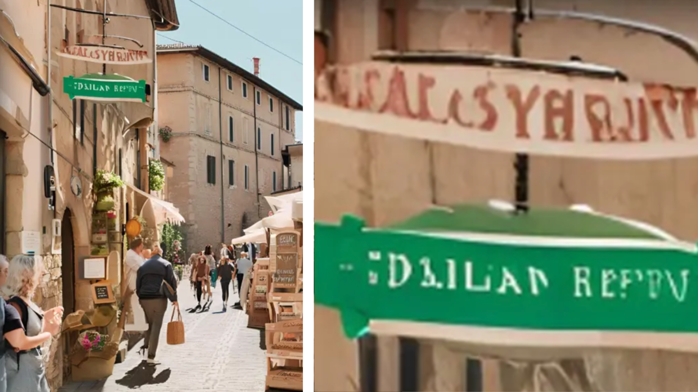
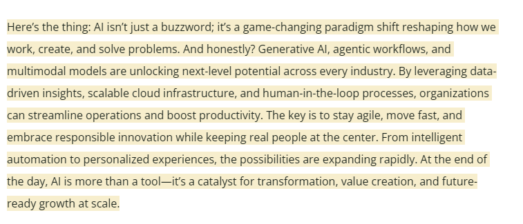
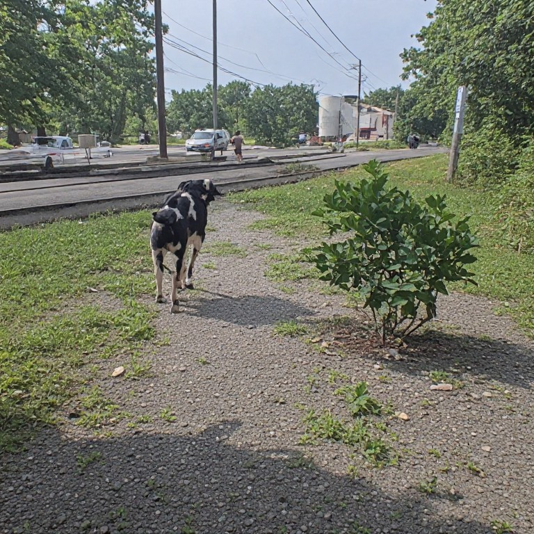

How to tell between AI and REAL LIFE
AI might look too perfect.
People
Most of AI-generated people look weird. If you pay close attention, a lot of their body parts are super wonky, especially hands (Unfortunately AI models are getting better at this!). Additionally, sometimes skin on AI models are too glossy. Some people might just look too perfect it's weird. Photos that focus solely on people will most likely have a blurred background for some reason. You might also get a weird feeling from their eyes. Some people describe AI-generated eyes as "dead eyes."
Image Generated by AI

Text (Images)
Text can be a teller. If text looks like gibberish or something like the Minecraft Enchantment Table Language, then the image is most likely AI. Unfortunately, this is also something that becomes less of a tell as AI gets better. There are a lot of AI posters with readable words.
Image Generated by AI

Text (Literal)
AI text can be pretty difficult. It's much more easier with an ai detector, such as GPTZero. But AI LOVES buzzwords and using "sass." These include: "But here's the thing," and "And honestly?", and "Then I realized," and "Hot take:". There is so much more, please check it out here: Text Tips. AI is also really cliché.
Image Generated by AI

Background / Texture
Wood grain or sand will look really uniform. Stone paths will look uniform. Water may look too still, or reflective like glass. Shadows may not match the light source, as if there was two suns. Reflections may also appear weird in AI-images. Look out for things that are unfunctional or out of place!
Image Generated by AI
Sources:
- https://www.bbc.co.uk/bitesize/articles/z6s4239
- https://www.getcybersafe.gc.ca/en/resources/recognize-artificial-intelligence-ai-9-ways-spot-ai-content-online
- https://huntingthemuse.net/library/how-to-tell-if-writing-is-ai
- https://www.cunastrategicservices.com/content/do-you-know-how-to-spot-ai-generated-images
- Kamali, Negar & Nakamura, Karyn & Chatzimparmpas, Angelos & Hullman, Jessica & Groh, Matthew. (2024. How to Distinguish AI-Generated Images from Authentic Photographs. 10.48550/arXiv.2406.08651.